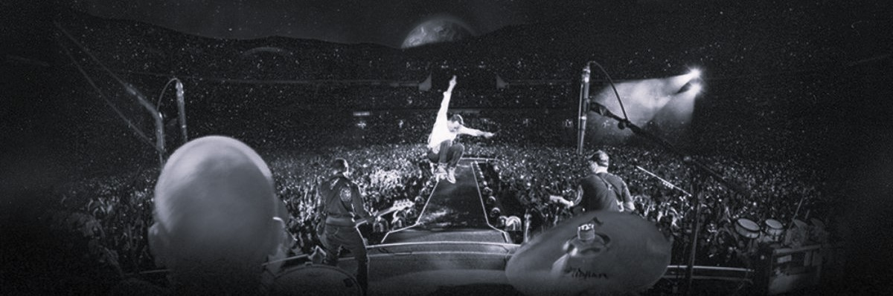

Hello, I'm Medea, and since my childhood, I dreamed of attending the concerts of such stars as Michael Jackson, Beyoncé and others. Then I grew up and saw the Super Bowl halftime show in 2016, where Beyoncé, Coldplay and Bruno Mars sang together. This collaboration caused such great and exciting emotions in me that I made it a goal to attend their concerts in the next 10 years. Thank God and the celebrities because they did the tours.
Beyoncé's Euro tour has been officially confirmed on February 1, 2023. Beyoncé was the main idol of my childhood and I wanted to attend her concert so badly that I didn't wait for the 4th of February when the tickets were supposed to go on sale and bought tickets from a reseller as soon as the official information was posted. To tell the truth, it was a bit difficult for me to enter the concert and I was worried a lot, so I recommend everyone to buy concert tickets on official websites.
On June 27, another concert was held in Warsaw as part of the Beyoncé tour, and I attended it. It was such a grand and inspiring show that even more than 9 months have passed, but I still reminisce and enjoy it every day. Beyoncé's energy completely engulfed the Puska's Arena, we were all dancing, singing, and most of all, feeling amazingly free. One of the main messages of Beyoncé's tour was:
"Nobody can judge me but me. I was born free."
On October 1 of last year, as part of Starring Georgia, the legend - Bruno Mars visited Georgia. With 15 Grammy Awards, 4 Brit Awards, 4 Guinness World Records and numerous music awards, Bruno Mars is one of the most influential artists of our time. With the synthesis of pop music, R&B, funk and soul, the American musician has become a favorite creator of different generations. With albums Doo-Wops & Hooligans, Unorthodox Jukebox and 24K Magic, he soon gained star status, and his hits became favorites of different generations. The concert was really great and gave us a lot of emotions.
After attending the Beyoncé and Bruno Mars concerts, I knew for sure that the next stop would be the Coldplay concert. Coldplay did not hesitate and booked tickets for the 2024 world tour. To tell the truth, I was a more active listener of Coldplay when I was a child, but everyone knows that their concert is grandiose, and everyone should try it for themselves, in my deep belief.
I have purchased tickets for the Coldplay concert on June 19. The concert will be held in Budapest and I will attend it with my friends. I am very excited, I have huge expectations and I know for sure that the emotions that Coldplay gives me will follow me for a very long time.